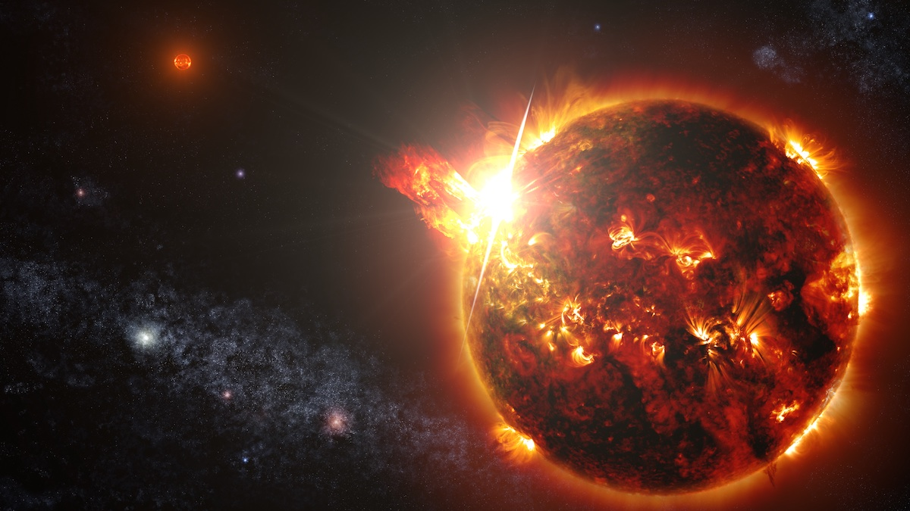
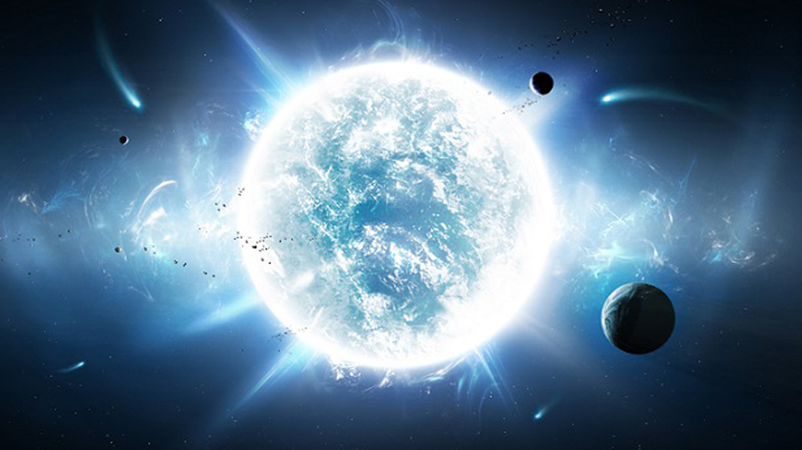
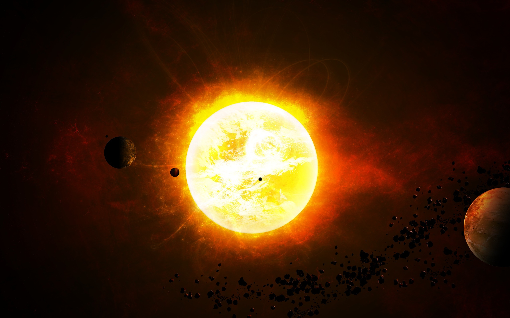
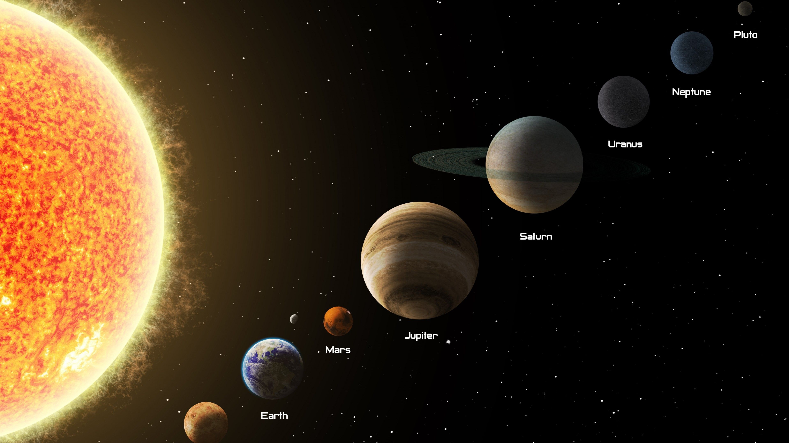

Зорі — це масивні газові кулі, які випромінюють світло. Зірки з'являються з великої газової хмари під дією гравітаційного стискання.
Найближча зірка до Сонця — це Проксіма Центавра. Вона знаходиться в 4,2 світлових роках (39ТРИЛЬЙОНІВ кілометрів).

Що таке світловий рік?
Світловий рік — це відстань, яку світло долає за рік.
Повернемось до зірок.
На небі (без штучного засвітлення, маючи гострий зір) ми можемо побачити близько 6000 зірок.

Всього зірок в нашій галактиці від 200 до 400 мільярдів.
Самим поширеним видом з них є Червоні карлики.
Існують дуже цікаві "зірки" — Коричневі карлики. Це об'єкти з розміром трошки більшим Юпітера, які недостатньо масивні для початку термоядерних реакцій, але занадто масивні, щоб бути планетами.
Ось ще один вид карликів — Білий карлик.
Це зірки, які колись були гігантами, але вони колапсували до Білого карлика (у зірки "закінчилось паливо").
Їх світимість така сама, як у Місяця в чисту ніч.

Давайте розглянемо наше Сонце.
Сонце — це зірка середнього віку з невеликою масою (порівняно з іншими зірками), яка входить до класу "Жовті карлики".
Маса Сонця така сама, як 332 940 Земель.

СОНЯЧНА СИСТЕМА
Сонячна система — планетна система, що включає в себе центральну зорю — Сонце, і всі природні космічні об'єкти (планети, астероїди, комети, потоки сонячного вітру тощо), які об'єднуються гравітаційною взаємодією.
Ближче до Сонця розташовані планети земної групи: Меркурій, Венера, Земля, Марс; далі від Сонця розташувались планети-гіганти: Юпітер, Сатурн, Уран, Нептун.
